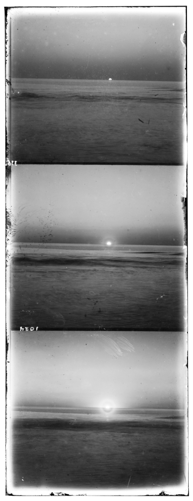

NCC Formula
I score candidates with sum((a-mean(a))*(b-mean(b))) / (||a-mean(a)||*||b-mean(b)||).
Project 1
Reconstructing color photographs from Prokudin-Gorskii glass plate scans by aligning the red and green exposures to the blue channel.
Approach
Each source image stores the blue, green, and red exposures stacked vertically. I split the image into thirds, aligned the green and red channels to blue, and report every displacement as (dy, dx): positive dy moves a channel downward and positive dx moves it right.
I implemented three alignment pipelines: Single-Scale Raw NCC for the small JPEGs, Multi-Scale Raw NCC for the required pyramid baseline, and Final Edge-NCC Pyramid for the submitted results. The final version keeps the same pyramid search but scores gradient-magnitude images instead of raw intensities.
To avoid border artifacts influencing the metric, each candidate shift is scored on the center crop of the image. Border cropping and contrast stretching are postprocessing steps after alignment: I crop away the outer frame and apply a light contrast stretch before saving the final result.
I score candidates with sum((a-mean(a))*(b-mean(b))) / (||a-mean(a)||*||b-mean(b)||).
The pyramid downsamples by 0.5 with anti-aliasing until the smaller side is at most 300px, searches radius 15 at the base, doubles the displacement at each finer level, then refines within radius 5.
During alignment, NCC uses the middle 50% of each dimension. After stacking, I crop 7% off each side and stretch intensities from the 1st to 99th percentile.
The full batch of 17 images runs automatically with one fixed parameter set in about 3 minutes on my laptop; Prisoners alone took about 23 seconds.
Required Baseline
I first implemented the required coarse-to-fine pyramid using raw-pixel NCC. It successfully aligned most images but failed on several channels whose brightness structures differed substantially. I then retained the same pyramid and NCC search while replacing raw intensities with gradient magnitudes.
This makes Multi-Scale Raw NCC the required baseline and Final Edge-NCC Pyramid the improved alignment method. Cropping and contrast stretching are separate postprocessing steps applied only after the channel shifts are chosen.
Source Plates
The original scans are large TIFF and JPEG files, so I generated lightweight PNG previews of the stacked black-and-white plates for the webpage. These previews show the raw input format without committing the full-resolution source data.



Small Images
Cathedral, Monastery, and Tobolsk are small enough that they reach the pyramid base case immediately, so the same recursive alignment code behaves like Single-Scale Raw NCC when run without edge scoring. The images below use the Final Edge-NCC Pyramid output with the same postprocessing as the TIFF results.


Final Edge-NCC Pyramid
For the larger TIFF files, exhaustive search at full resolution would be slow because the true displacements can be dozens or hundreds of pixels. The pyramid first solves a smaller version of the problem, doubles that displacement at each finer level, and refines locally. The large images below are the visually primary final outputs: one Final Result per provided TIFF with final green and red offsets.


Offsets are (dy, dx); green and red are aligned to blue using the Final Edge-NCC Pyramid.
| Image | G to B | R to B |
|---|---|---|
| Cathedral | (5, 2) | (12, 3) |
| Monastery | (-3, 2) | (3, 2) |
| Tobolsk | (3, 3) | (7, 3) |
| Church | (25, 4) | (58, -4) |
| Emir | (49, 24) | (107, 40) |
| Harvesters | (60, 18) | (124, 14) |
| Icon | (41, 17) | (90, 23) |
| Ilemselga | (40, 7) | (132, 11) |
| Melons | (80, 10) | (177, 14) |
| Religious Painting | (29, 4) | (69, 7) |
| Self Portrait | (78, 29) | (175, 37) |
| Siren | (49, -5) | (97, -24) |
| Three Generations | (53, 13) | (111, 9) |
| Wharf | (15, -6) | (82, -16) |
Additional Examples
I also ran the same final pyramid alignment on additional Prokudin-Gorskii scans. Capri, Sacks, and Prisoners aligned well with the fixed parameter set; Sunset is discussed separately as a failure case because its result was not reliable enough to present as a successful selected image.


Bells & Whistles
Raw RGB intensities are not always comparable across channels. The Emir portrait is the clearest example: the blue channel's brightness pattern differs from red and green, so raw pixel NCC can choose a displacement that looks numerically good but visually wrong. Edge-based NCC helps because it compares structural changes rather than absolute brightness.
I separate the improvements into two groups. The alignment improvement is gradient-magnitude NCC plus interior-crop scoring. The postprocessing improvement happens after alignment: a 7% border crop removes rolled edges, then a 1st-to-99th percentile contrast stretch makes the saved JPG easier to read.
Raw pixel NCC struggles with cross-channel brightness differences; edge NCC lines up the face and clothing structure much better.

The baseline locks onto misleading color/intensity regions, while the final result uses edges and interior scoring to align the people and field rows.

Border and brightness artifacts are reduced by scoring only the interior during alignment and cropping the final composite afterward.

Failure Analysis
Sunset was the hardest image I tried from the larger collection. Its sky and water contain broad smooth regions, while the channels differ strongly in brightness and color. Because NCC rewards similar intensity structure, both raw pixels and edge scoring can latch onto the wrong repeated horizon or border features instead of the true scene alignment.
The offsets reflect that instability: the baseline red shift is very large, and the final red shift is also suspicious because it wraps horizontally. This is a good example of a case where simple translation-only alignment is probably not enough; a more robust version would mask borders more aggressively, search on sharper interior features, or use a better reference/metric for scenes with heavy color-channel exposure differences.
Baseline G: (0, -11), R: (237, -22) · Final G: (52, -9), R: (116, 253)


Notes
The largest failure mode was relying only on raw channel brightness. Some scenes contain strong color-dependent differences, so the NCC score can prefer a displacement that matches intensity patterns but leaves colored ghosts around important edges. Edge-based scoring helps because it compares structure rather than brightness, while final cropping removes the wraparound artifacts introduced by circular shifts.